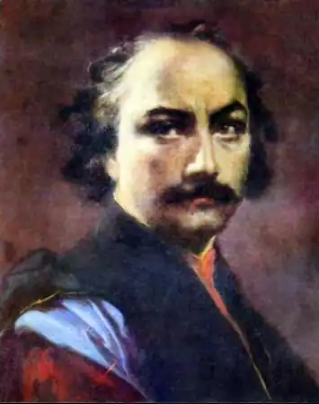

УРАМІШВІЛІ, Давид (1705, с. Сагурамо — 21.07. 1792, м. Миргород Полтавської обл.) — грузинський поет.Гурамішвілі народився у селі Сагурамо, що неподалік давньої столиці Грузії — Мцхети. Систематичної шкільної освіти він не здобув. Остерігаючись нашестя лезгинів, сім'я Гурамішвілі сховалась у гірському селі Ламіскана. Влітку 1728 р. озброєна група лезгинів захопила Давида Гурамішвілі у полон і відвезла в гори, де він перебував у становищі невільника. Йому все ж вдалося втекти з полону; босий, голодний, у лахмітті, він багато днів блукав у горах, йдучи на північ. На Північному Кавказі його тепло прийняв і допоміг невідомий російський поселенець.
У 1729 р. Гурамішвілі приїхав у Москву і знайшов притулок у грузинській колонії Вахтанга VI. Після смерті Вахтанга VI у 1738 р. разом з іншими емігрантами Гурамішвілі прийняв російське підданство. Він був зарахований рядовим у грузинський гусарський полк, отримав землю на проживання в Миргороді та в селі Зубівці (Україна).
Як солдат царської армії, Гурамішвілі брав участь у багатьох її бойових діях; у 1739 р. він був у Бессарабії, в 1742 р. у Фінляндії став учасником Фредріксгамської битви зі шведами. Майже на самому початку Семилітньої війни, у 1758 р. Гурамішвілі потрапив у полон біля Кюстрина і певний час перебував у Магдебурзькій фортеці. Наприкінці 1759 p., звільнившись із полону, змучений морально та фізично, він повернувся в Україну, де взявся за відновлення свого занепалого господарства, але саме ці роки позначені інтенсивною поетичною творчістю. З поезією Гурамішвілі пов'язаний процес демократизації грузинської літератури, вивільнення її від східної екзотики та книжності. Поет спирався, з одного боку, на кращі традиції давньогрузинської поезії, перш за все Ш. Руставелі, а з іншого, — на фольклор, зокрема на традиції української народної пісні. Літературна спадщина Гурамішвілі відома під назвою "Давитіані" ("Книга Давида", 1787). У цій збірці центральне місце відведено історичній поемі "Лихоліття Грузії" ("Чірі Картліса"). Поему відкриває поетична декларація, в якій автор розмірковує про обов'язок художника, поета-громадянина чесно та правдиво відображати життя. Є у поемі і конкретні біографічні чи літератур-но-засадничі факти, як, приміром: Для думок своїх я пильнослів струнких шукаю, —Лиш слова, що вірш складають,за стрункі вважаю,Та про звичний розмір віршівдбати не зволів я,В риторів пустих не буду вчитись краснослів'я.Все це виклав я у слові щирім і одвертімВ році тисяча сімсотім сімдесят четвертім,Як минався листопададень двадцять дев'ятий,Щоб веління сил найвищих віршем прославляти.(Тут і далі пер. М. Бажана)Поема "Лихоліття Грузії" насичена політичною гостротою та драматичним пафосом. У розповідь про трагічну епоху грузинського народу (часи Вахтанга VI) майстерно вплетена історія власних нещасть поета. У цій поемі особливо сильно відобразилися національно-політичні ідеали та громадянський пафос Гурамішвілі. Поет розвинув своєрідну історично-філософську концепцію, зіперту на християнську мораль і заповіді. Релігійно-моральний занепад суспільства, на його думку, прирікає народ на неминучу загибель. Поезію Гурамішвілі пронизує глибоке християнсько-релігійне почуття. У своїх на новий лад модернізованих гімнографічних піснеспівах він проникливо і надзвичайно хвилююче осмислив драматичні біблійні сюжетні мотиви, особливо із Нового Заповіту. Іноді Гурамішвілі у двоплановому — реальному й алегорично-містичному — викладі розповідає про перипетії свого життя, наприклад, у знаменитій пісні "Зубівка" (Зубівка — назва села поблизу Миргорода, де жив поет): Я, із Зубівки вертавши,жінку стрів чудову —Бачити це гарне личкозір мій прагне знову.Чорна родимка красилавроду чорноброву, —Вид її мене повергнув,кинув до закову! Це ж стосується і такого відомого вірша, як "Давидова скарга на швидкоплинний світ".На цілковито іншому сюжетному матеріалі побудована його друга значна поема "Весела весна". "Весела весна" — чудовий взірець буколічної поезії. На фоні чудово окресленого українського пейзажу поет змальовує ідилічне життя селян, пастухів і пастушок. Поема цікава і новизною тематики, і захопливістю викладу, і почуттям гумору. Цією поемою Гурамішвілі вписав нову сторінку в історію грузинської літератури. Давид Гурамішвілі — великий майстер художнього слова. Він продовжив і розвинув кращі традиції грузинської літератури, одночасно ставши зразком не лише для сучасників, а й для поетів Нового часу. Гурамішвілі присвятили вірші П. Тичина та М. Бажан, М. Рильський та І. Драч, О. Ющенко та В. Юхимович, а композитор Г. Таранов — симфонічну поему "Давид Гурамішвілі". Усю поетичну спадщину Гурамішвілі українською мовою переклав М.Бажан. У 1949 р. у Миргороді на могилі Гурамішвілі встановлено пам'ятник (скульптор Я. Ражба), а в 1969 р. відкрито літературно-меморіальний музей поета.